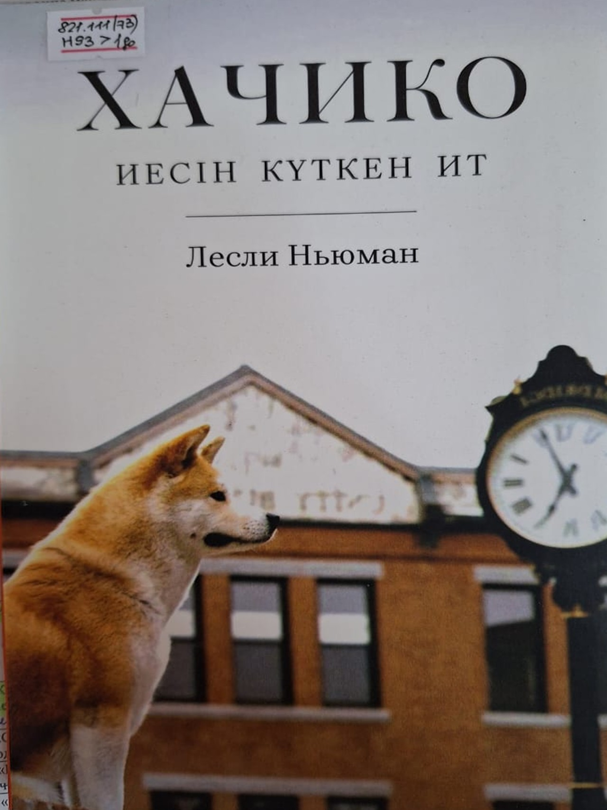
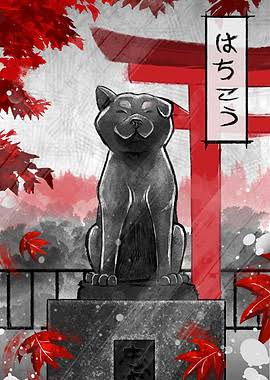

Адалдық
Хачиконың әрекеті адалдықтың уақытқа тәуелді емес екенін көрсететін символ ретінде қабылданады. Ол үшін бұрынғы байланыс жоғалып кетпейді.
Кейде адамның өмірінде қысқа ғана уақыт болған бір кездесу бүкіл ғұмырға жететін із қалдырады. Хачико туралы оқиға — дәл сондай үнсіз, бірақ жүрекке ауыр тиетін адалдықтың тарихы.

«Ол күн сайын күтті. Себебі оның жүрегінде қоштасу болған жоқ.»
Хатиконың тарихы«Хачико — Иесін күткен ит» атауының өзінде шығарманың негізгі сезімі жатыр: күту. Бұл жай ғана біреуді белгілі бір жерде күту емес, өткен күнге, сүйікті адамға және үзілмеген байланысқа деген адалдық.
Хачиконың тарихы адам мен жануар арасындағы байланыстың қаншалықты терең болуы мүмкін екенін көрсетеді. Ит өз иесін күнделікті өмірінің маңызды бөлігі ретінде қабылдайды. Сол себепті иесі жоқ болған кезде де оның күнделікті әдеті мен күтуі жоғалмайды.
Шығармадағы ең әсерлі нәрсе — Хачиконың көп сөйлемей-ақ сезімді жеткізуі. Оның күтуі арқылы оқырман сағыныштың, жалғыздықтың және адалдықтың мағынасын өздігінше сезінеді.
Төмендегі мәтін шығарманың толық мәтіні емес, оқиғаны түсінуге арналған кеңейтілген мазмұндық баяндау.
Хачиконың өміріндегі ең маңызды кезеңдердің бірі — оның иесімен жақын байланыс орнатуы. Күнделікті бірге өткізілген уақыт, үйге қайту, таныс дыбыстар мен әдеттер иттің өмірінде ерекше орын алады.
Уақыт өте келе белгілі бір тәртіп қалыптасады. Хачико иесін шығарып салуды және оны қайта қарсы алуды үйренеді. Қарапайым болып көрінетін осы күнделікті әрекет олардың арасындағы байланыстың белгісіне айналады.
Бір күні бұл қалыпты өмір бұзылады. Хачико күткен адам бұрынғыдай оралмайды. Бірақ ит мұны адам сияқты түсіндіріп, қабылдай алмайды. Ол өзінің бұрынғы әдетіне сүйеніп, күтуін жалғастыра береді.
Күндер өткен сайын күту бұрынғыдан да мұңды сипат алады. Айналадағы адамдар өзгеруі мүмкін, уақыт өтуі мүмкін, бірақ Хачиконың ішкі адалдығы өзгермейді. Оның әрекеті адамдардың назарын аударады.
Хачиконың тағдыры бір отбасының ғана тарихы болып қалмайды. Оның адалдығы туралы адамдар біле бастайды. Иттің бейнесі адамның жақын жанынан айырылған кездегі сезімдерін де еске салады.
«Кейде күту — ұмыта алмағандықтан емес, ұмығың келмегендіктен жалғасады.»
Хачико туралы әңгімені тек жануар туралы қайғылы оқиға ретінде емес, адамның сезімі мен естелігі туралы шығарма ретінде де қарастыруға болады.
Хачиконың әрекеті адалдықтың уақытқа тәуелді емес екенін көрсететін символ ретінде қабылданады. Ол үшін бұрынғы байланыс жоғалып кетпейді.
Күту арқылы шығарма жақын адамнан айырылғаннан кейінгі бос кеңістікті сезіндіреді. Сағыныш бұл жерде сөзбен емес, әрекетпен беріледі.
Адам өмірден кеткеннен кейін оның күнделікті өмірдегі орны босап қалады. Бірақ естелік сол адамды адамның жүрегінде сақтап қалуы мүмкін.
Хачиконың жалғыз күтуі оқырманға үнсіз жалғыздықты сезіндіреді. Оның айналасында адамдар болғанымен, күткен адамының орны бөлек.
Хачиконың бейнесін әр кезең әртүрлі көрсетеді. Бір суретте ол жалғыздықпен үнсіз күтіп отырса, екіншісінде оның тарихы естелікке айналғанын көреміз.

Фильм рассказывает ту же историю преданности, но показывает её через отношения Хатико и его хозяина и постепенно раскрывает, как одна встреча может изменить жизнь человека и целого города.
История начинается со встречи профессора Паркера Уилсона и потерявшегося щенка породы акита. Профессор не собирался оставлять собаку у себя, однако между ними быстро возникает особая привязанность. Щенка называют Хатико, и со временем он становится настоящим членом семьи.
Каждый день Хатико провожает хозяина до железнодорожного вокзала, когда тот отправляется на работу, а затем приходит туда снова, чтобы встретить его вечером. Для собаки это становится привычным ритуалом, который связывает её с любимым человеком.
Однажды профессор неожиданно умирает на работе и больше не возвращается домой. Хатико не понимает причины его отсутствия. На следующий день он снова приходит на вокзал и продолжает ждать. Проходят дни, месяцы и годы, но собака не отказывается от своей привычки.
Люди на вокзале постепенно замечают Хатико. Одни начинают заботиться о нём, другие просто наблюдают за его ежедневным ожиданием. История собаки становится известной далеко за пределами вокзала, потому что в её поведении люди видят любовь, верность и память о человеке, которого она потеряла.
Годы ожидания делают Хатико символом преданности. Финал фильма особенно эмоционален: он напоминает, что настоящая привязанность не всегда требует слов и что память о близком человеке может сохраняться очень долго.
Видео енді тікелей осы сайттың ішінде ашылады. Терезе экран еніне толық бейімделеді.
Енді бұл жай ғана PDF емес. Кітаптың мұқабасын басып, оны шын кітап сияқты ашыңыз. A — алдыңғы бет, D — келесі бет, ал телефонда парақты саусақпен сырғытыңыз.


Кітап пен фильм бір оқиғаның негізіндегі екі түрлі баяндау тәсілі. Бірі мәтін арқылы ойға көбірек орын берсе, фильм сезімді көрініс, музыка және актерлік ойын арқылы жеткізеді.
| Кітап | Фильм |
|---|---|
| Оқырман оқиғаны өз қиялымен елестетеді. | Оқиға экрандағы көріністер мен дыбыс арқылы беріледі. |
| Мәтін кейіпкерлердің ішкі сезімдерін баяндауға мүмкіндік береді. | Сезім көбіне көзқарас, әрекет, музыка және үнсіздік арқылы көрсетіледі. |
| Оқырман оқиғаның қарқынын өзі анықтай алады. | Фильм оқиғаның уақытын режиссерлік монтаж арқылы белгілейді. |
Оқып немесе көріп болғаннан кейін өз әсеріңді осында жазып қоюға болады. Бұл блок сайтты жеке оқу жобасына айналдырады.
Хачиконың тарихы үлкен сөздерді қажет етпейді. Оның күтуі адамның жүрегіндегі ең қарапайым, бірақ ең ауыр сезімдердің бірін көрсетеді: бір кездері қасыңда болған адамды сағыну. Уақыт өткен сайын көп нәрсе өзгереді, бірақ шынайы байланыс адамның жадында қала береді.
Сондықтан бұл оқиға оқырманға адалдықтың бағасы, жақын адамдарды қадірлеу және бірге өткізілген уақыттың маңызы туралы ой салады.